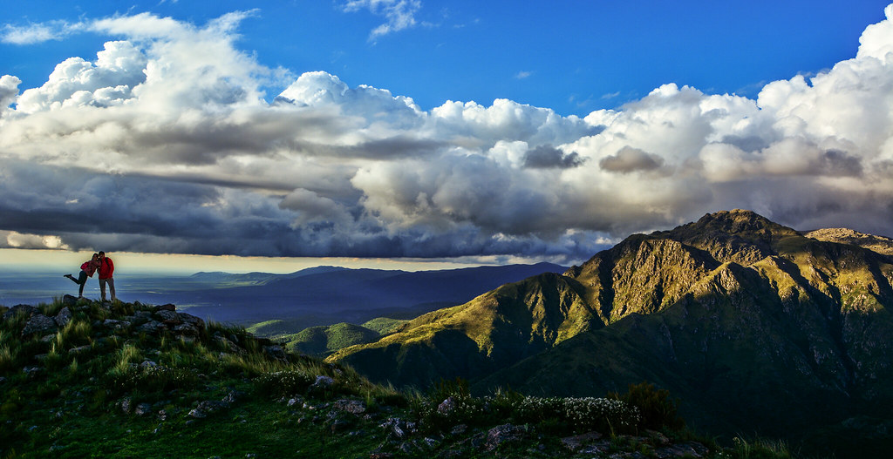

Viaja con Tu Perro
Transporte
- Transportes de montaña como el teleférico de Montserrat permiten el acceso a mascotas sujeto a normativas específicas de bozal y correa. — fuente: www.turismocanino.es (2024-01-20).
Agua
- Los senderistas con perro buscan rutas con presencia de agua (ríos, pozas, lagos) para prevenir golpes de calor. — fuente: www.turismocanino.es (2024-02-15).
Gran canaria
- Existen itinerarios clasificados por desnivel y tiempo con acceso canino permitido en Gran Canaria. — fuente: www.turismocanino.es (2024-03-01).
Andorra
- Andorra ofrece escapadas con perro con información sobre alojamientos y rutas adaptadas. — fuente: www.turismocanino.es (2024-02-20).
Normativas
- Los parques naturales tienen normativas específicas sobre uso de correa y bozal para mascotas que varían por zona. — fuente: www.turismocanino.es (2024-03-10).
Restauracion
- Existen rutas con opciones de restauración dog-friendly en destinos como Villanueva del Fresno. — fuente: www.turismocanino.es (2024-01-25).
Fuentes verificadas
- https://www.turismocanino.es/escapada-andorra-con-perro/
- https://www.turismocanino.es/montserrat-con-perro/
- https://www.turismocanino.es/planes-con-perro-en-gran-canaria/
- https://www.turismocanino.es/rutas-con-agua-en-la-comunidad-valenciana/
- https://www.turismocanino.es/viajar-al-pais-vasco-con-perro/
- https://www.turismocanino.es/villanueva-del-fresno-con-perro/
Huecos declarados: volumen de búsqueda y competencia cuantitativa son UNVERIFIED (requieren Google Trends / Search Console).